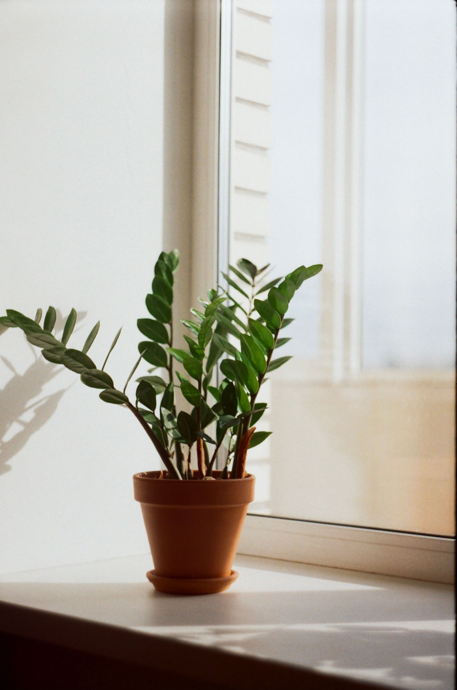
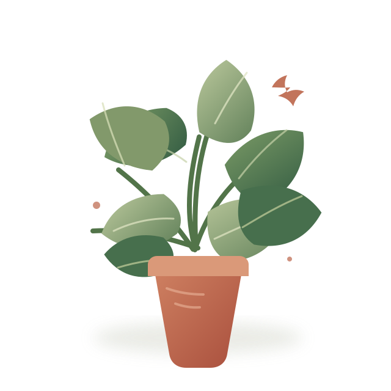
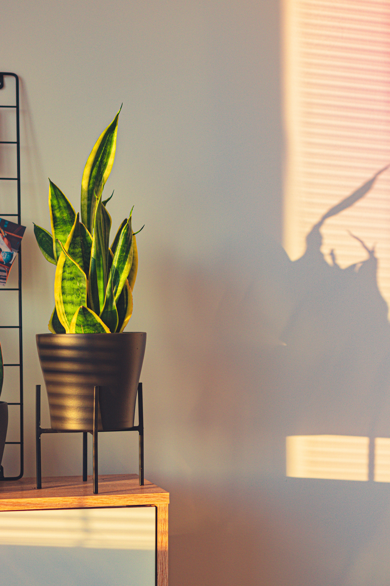
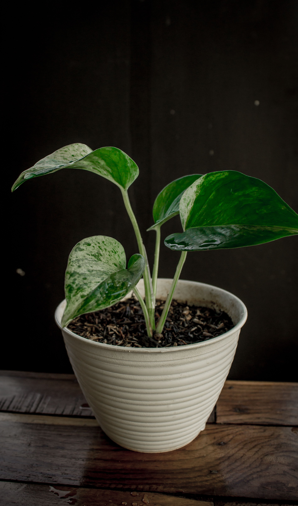
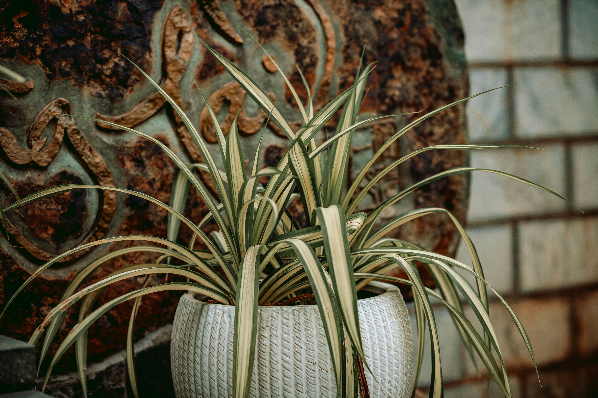
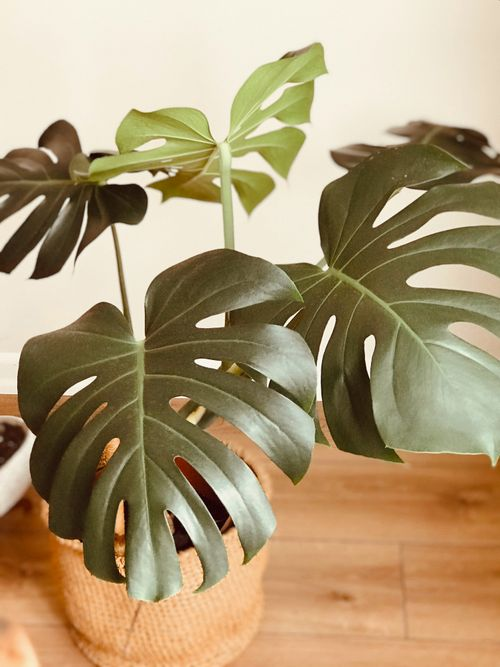
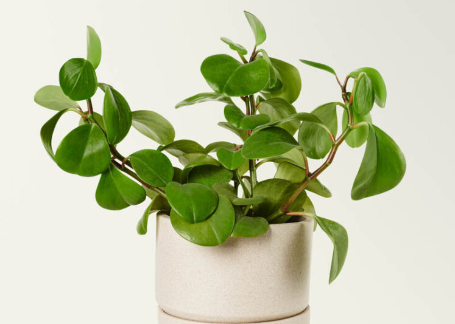
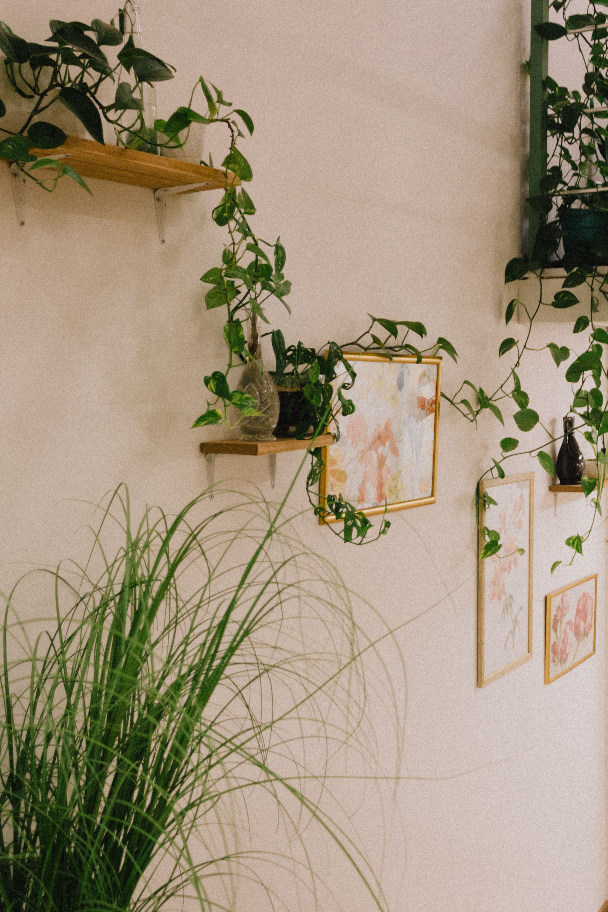
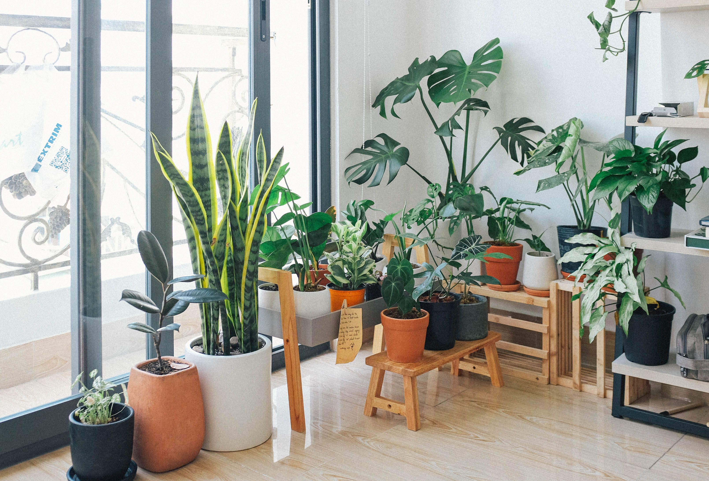

01 / EASYنبات صبور

Zamioculcas zamiifolia
زاميا
خضرة لامعة وطباع هادية. مناسبة لو روتينك مش ثابت.
اسقها بعد ما تنشف التربة كلها تقريبًا.
نصيحة صغيرة
ما تسيبش ماء راكد في الصحن. النبتة تتحمل قلة الري أحسن من زيادة الماء.
دليل أخضر على قدّ بيتك
مش عارف تبدأ منين؟ خلّيها علينا. نبتة تساعدك تختار صاحب أخضر يناسب ضوء شقتك ووقتك — من غير مصطلحات معقدة ولا جدول ريّ صارم.

اختيار النبتة الصح يبدأ من بيتك — مش من قواعد كتير.
دليل منزلي من مصر01خضرة على مقاس يومك
اختار الإضاءة ووقت العناية المتاح عندك. هنقرّب لك الاختيارات — والباقي هتتعلمه واحدة واحدة.

Zamioculcas zamiifolia
خضرة لامعة وطباع هادية. مناسبة لو روتينك مش ثابت.
اسقها بعد ما تنشف التربة كلها تقريبًا.
ما تسيبش ماء راكد في الصحن. النبتة تتحمل قلة الري أحسن من زيادة الماء.

Dracaena trifasciata
شكل معماري جميل، وتستحمل تفاوت مواعيد العناية.
سيب التربة تنشف تقريبًا بالكامل قبل الري.
اختار أصيصًا بفتحة تصريف، وابعدها عن الشمس المباشرة القوية.

Epipremnum aureum
متسلّقة لطيفة للمبتدئين، وتحب الركن المضيء بعيدًا عن الشمس.
اسقها لما ينشف أول ٢–٣ سم من التربة.
قصّ الأطراف الطويلة لو حبيت شكلًا أكثف؛ ويمكن تجذير القصاصة في الماء.

Chlorophytum comosum
أوراق مقوّسة وخضرة مرحة لمكان فيه ضوء غير مباشر.
خلّي أول طبقة من التربة تنشف بين الريّات.
الأطراف البنية قد تعني هواءً جافًا أو أملاحًا زائدة؛ راقب النبات وعدّل بلطف.

Monstera deliciosa
أوراق كبيرة بطابع استوائي؛ تكبر مع مكان مضيء ومساحة حواليها.
اسقها لما ينشف سطح التربة، وصرف الماء الزائد.
امسح الأوراق من التراب أحيانًا؛ ده يساعدها تستفيد من الضوء المتاح.

Peperomia obtusifolia
نبتة مدمجة بأوراق ممتلئة، مناسبة لرف أو مكتب صغير.
اترك التربة تنشف جزئيًا قبل ما تسقيها تاني.
تجنّب إن الأصيص يفضل مبلولًا؛ الأوراق الممتلئة تخزن بعض الماء.
مفيش اختيار مطابق دلوقتي. جرّب تغيّر الفلتر.
ملاحظة: احتياج النبات بيتغير حسب حرارة البيت وحجم الأصيص. افحص التربة بإصبعك بدل جدول ريّ ثابت.
✳خضرة عايشة في البيت
أفكار بسيطة لشكل النباتات وهي مزروعة في البيت، عشان تتخيل الخضرة عندك.


Photos: Duygu Aci / Pexels · Max Vakhtbovych / Pexels
02بداية من غير ضغط
مش مطلوب منك تبقى خبير. شوية ملاحظات بسيطة تساعدك تفهم نبتتك وتسيبها تكبر على راحتها.
راقب المكان خلال اليوم. الضوء الساطع غير المباشر — جنب شباك منوّر من غير شمس حارقة على الورق — يناسب نباتات كتير.
فتحة التصريف تساعد الماء الزائد يخرج. خليك مع أصيص مناسب لحجم الجذور، مش أكبر بكتير من اللازم.
المواعيد مش واحدة لكل بيت. المس أول كام سنتيمتر من التربة، واسقِ لما يناسب نوع نبتتك، وسيب الماء الزائد يتصفّى.
غيّر مكان النبتة بالتدريج، وراقب شكل أوراقها. تعديل بسيط كل مرة أسهل من تغييرات كتير مرة واحدة.
03أسئلة على الطريق
إجابات صغيرة تطمّنك قبل ما تجيب أول نبتة.
اقعد في المكان وقت النهار: لو النور مريح للقراءة من غير ما تكون الشمس ضاربة مباشرة على المكان، غالبًا عندك ضوء غير مباشر. ظل إيدك الواضح علامة بسيطة، مش اختبارًا دقيقًا.
مفيش رقم ثابت ينفع لكل النباتات والبيوت. نوع النبتة، حجم الأصيص، والحرارة كلهم بيأثروا. افحص التربة واتبع احتياج نوعك بدل ما تسقي على جدول.
حسب نوعها. نباتات كتير منزلية تفضّل ضوءًا قويًا غير مباشر، والشمس القوية وخصوصًا خلف الزجاج ممكن تحرق بعض الأوراق. اعرف احتياج نبتتك وابدأ بالتدرّج.
لو الإضاءة ضعيفة ووقتك قليل، الزاميـا أو جلد النمر اختيارات مرنة نسبيًا. لكن مفيش نبتة تستغنى تمامًا عن الضوء المناسب والتصريف الجيد.
كل نبتة بتعلّمك حاجة. ابدأ بواحدة، والباقي ييجي مع الوقت.
↑